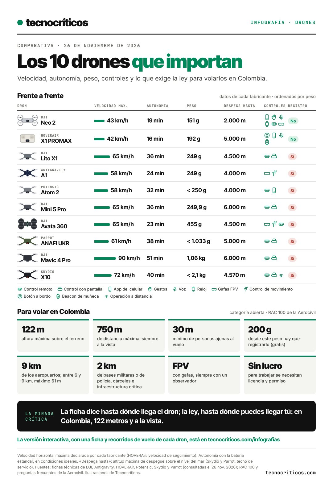
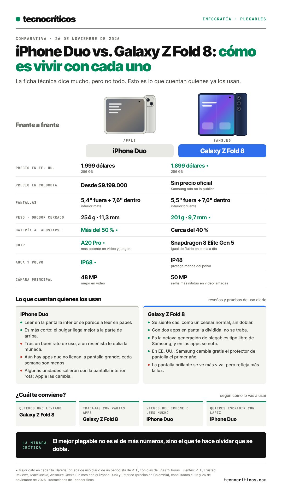
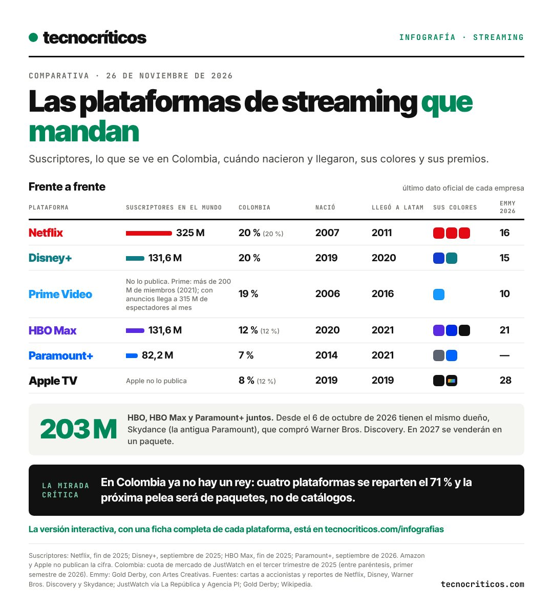
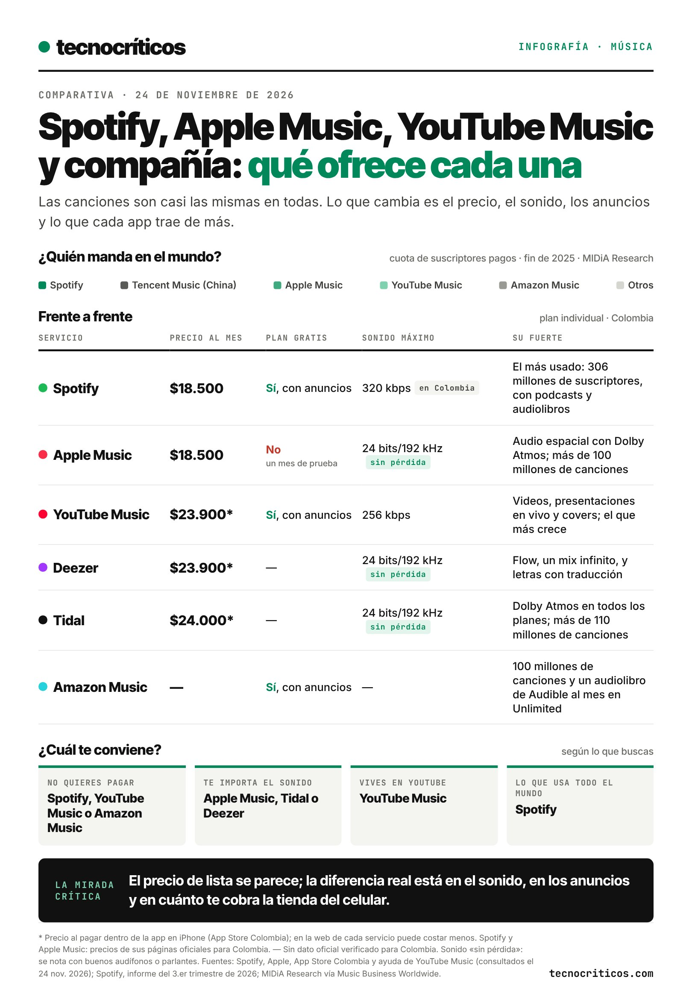
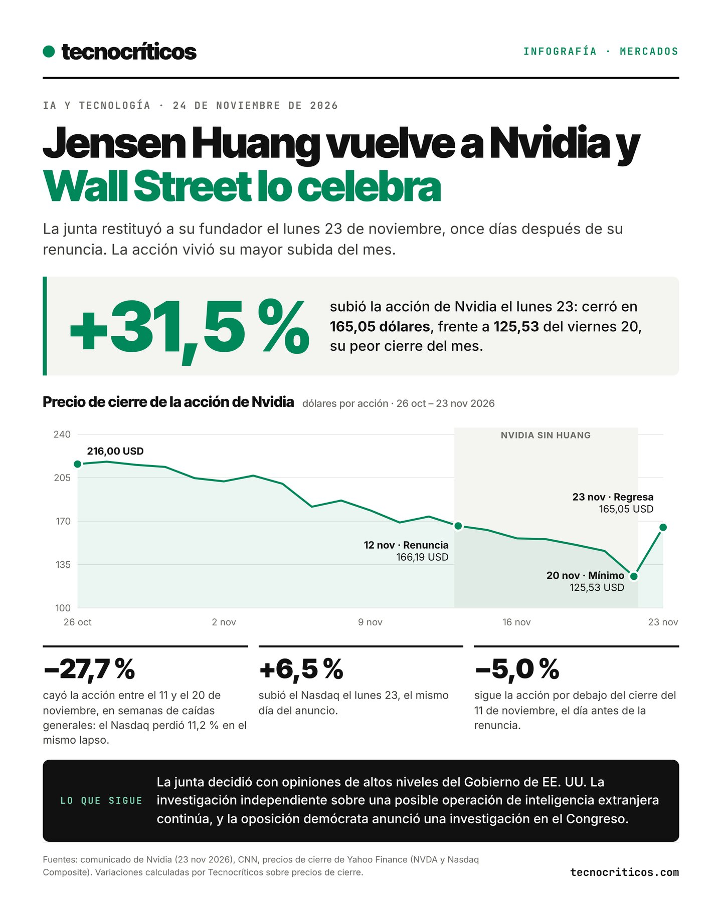

Infografías · Tecnocríticos
Datos que se entienden de un vistazo
Comparativas, cifras y explicaciones en una sola imagen, con datos verificados y sus fuentes. Descárgalas y compártelas citando a Tecnocríticos.

Ver completa ↓
● La más reciente · IA y tecnología
Los 10 drones que importan: velocidad, altura, controles y reglas para volar en Colombia
DJI, Antigravity, HOVERAir, Potensic, Skydio y Parrot frente a frente, con una ficha para cada dron, recorridos de vuelo simulados y lo que exige la Aerocivil.
26 de noviembre de 2026

Todas las infografías
6 infografías
IA y tecnología · 26/11iPhone Duo vs. Galaxy Z Fold 8: la comparación interactiva para saber cuál te conviene

Videojuegos y series · 26/11Netflix, Disney+, Prime Video, HBO Max, Paramount+ y Apple TV: las plataformas de streaming que mandan
iPhone Duo vs. Galaxy Z Fold 8: cómo es vivir con cada uno

Con videoVideojuegos y series · 24/11Spotify, Apple Music, YouTube Music, Deezer, Tidal y Amazon: qué app de música te conviene

De una noticiaIA y tecnología · 23/11